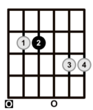

El acorde Em7 (Mi menor séptima) está formado por las notas E - G - B - D, siguiendo la fórmula 1 - ♭3 - 5 - ♭7, lo que significa que es un acorde menor con una séptima menor agregada. Su sonido es más suave y melancólico que el de Em, dándole un toque más jazzeado y relajado. Se usa mucho en géneros como jazz, blues, rock y baladas, y es común en progresiones como Em7 - A7 - Dmaj7, donde actúa como un acorde de paso rico en color armónico.